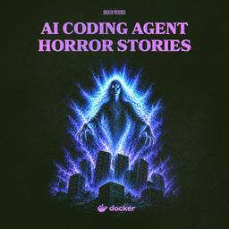

Docker
https://www.docker.com
Docker is a platform designed to help developers build, share, and run container applications. We handle the tedious setup, so you can focus on the code.
フィード
Runtime Enforcement, Not Runtime Advice
Docker
Explore governance at the runtime layer and learn why isolation, policy enforcement, and controlled tool access are becoming foundational for agentic systems.
2日前

Coding Agent Horror Stories: The Agent That Deleted Production 1
1
Docker
Learn how an AI coding agent caused a 13-hour outage and how Docker Sandboxes help reduce risk with scoped identities and isolated execution.
4日前
From the Captain’s Chair: Mohammad-Ali A’râbi
Docker
In this edition of From the Captain’s Chair, we’re interviewing Mohammad-Ali A'râbi, author, public speaker, and software engineer.
8日前

AI Agents Explained: How to Build with Them Safely
Docker
Learn what AI agents are, how they work, and what it takes to build and run them safely in production.
8日前
The Developer Has Changed. So Should Developer Conferences
Docker
Discover why Docker is co-hosting WeAreDevelopers World Congress North America and how AI agents are transforming software development and developer communities.
8日前
AI Engineer World’s Fair 2026: The Runtime Is Where Agent Trust Is Won
Docker
We spent the week at AI Engineer World's Fair in San Francisco, on stage and on the floor. Here's what we heard, and where we think it lands for anyone building with agents.
10日前
Your Laptop Is the New Production Environment
Docker
AI agents are changing software development. Learn why your laptop is becoming the new production environment and why runtime governance matters.
16日前
Why AI Agents Need Isolation
Docker
Learn why AI agent isolation matters, how Docker SBX enables safer AI workflows, and how Sandbox Kits help. Written by Docker Captain Karan Verma.
23日前
What Does EU AI Act Compliance Require?
Docker
Learn what EU AI Act compliance requires at each risk tier, key deadlines through 2027, and how engineering teams can operationalize AI governance.
1ヶ月前
How to Generate an SBOM for Container Workflows
Docker
Learn when, where, and how to generate SBOMs for container images. Covers build-time vs. post-build approaches, quality criteria, and CI/CD integration.
1ヶ月前